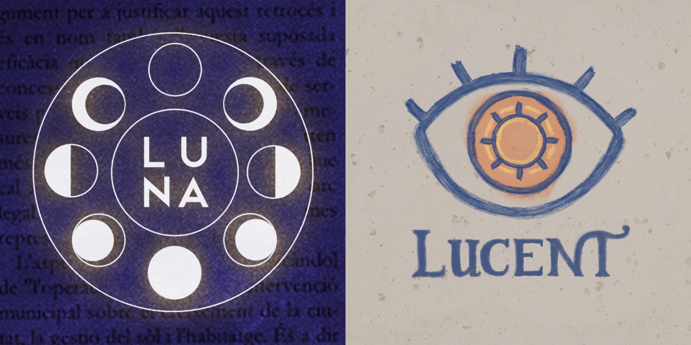
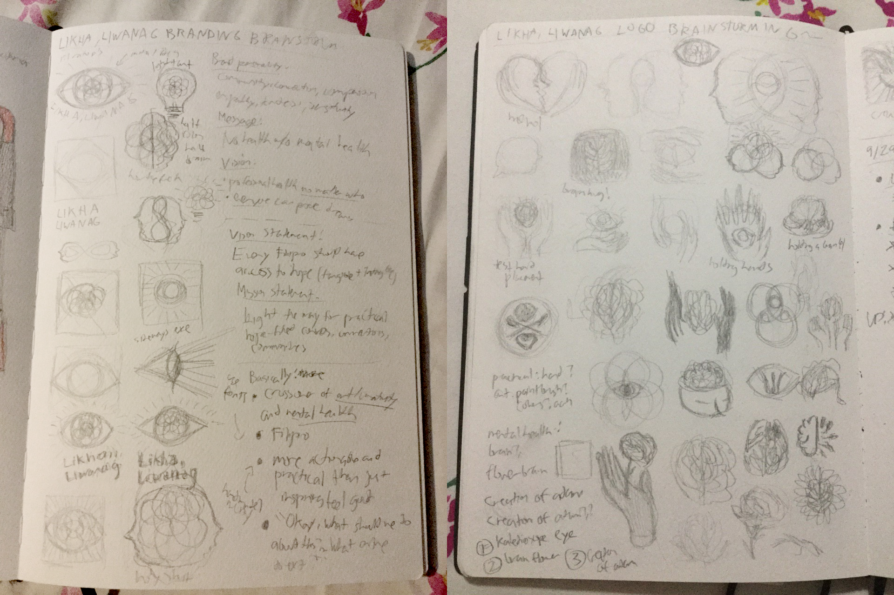
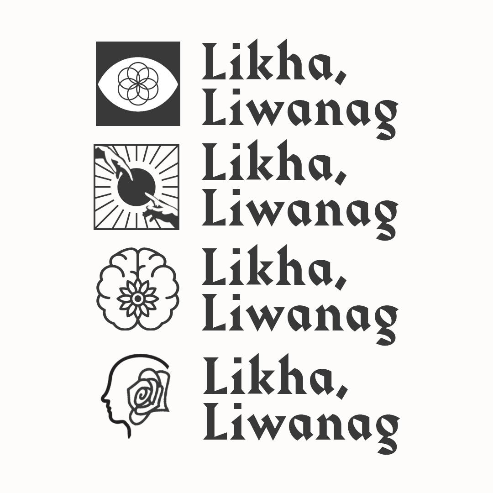

Likha, Liwanag
Identity design for a non-profit collective advocating for practical support of mental health.
Year
2019
Key Skills
Ideation, Sketching, Logo Design

Likha, Liwanag is a non-profit collective dedicated to mental health literacy and fundraising, aiming to make mental health intersectional, interdisciplinary, and inclusive.
Context
The organization’s beginnings are rooted in two independently organized fairs: Luna (August 2017) and Lucent (September 2018). Back then, the organizers had the vague goals of raising awareness for mental health, advocating art as a means of expressing your struggle, and raising funds for PMHA.
Previous fair logos
The founders’ decided to form a formal nonprofit organization for two reasons: to build a more consistent image and create some recognizability among audiences, and to create trust in the eyes of partner and potential partner companies via government registration and documentation.
Organization Persona
Apple Nocom, one of the co-founders, envisioned Likha, Liwanag as the smart, sweet, and caring Mom/Dad friend of the group.
- Intelligent enough to lead conversations, but human enough to be relatable
- Toned down enough to treat the topic seriously, but casual enough to be approachable
- Stylish enough to be enticing, but simple enough to focus on the message
- Grounded enough to be the go-to person for advice, but friendly enough to be lovable
Inquiry
“Likha,” the Tagalog root word meaning “create” is about imagination, invention, and the practice of making. “Liwanag” means light, a common symbol of hope, enlightenment, guidance, and ideas. Combined, the name Likha, Liwanag expresses the message and mission of the org: creating hope and sparking ideas through imagination and active execution.
I wanted the logo to capture this essence of the organization, so I explored the integration of human body parts with creative concepts/pursuits (e.g. painting, gardening).
From all these sketches, I formulated 4 high-fidelity logo drafts for the founders to choose from. In the end, the 4th logo was chosen because it reflected the concept of wellness/caring for the whole person the best.
Design
Colors
Muted primary colors were chosen to represent the organization’s Filipino roots. Blended together, the colors made up a gradient rainbow, symbolizing the inclusivity and intersectionality of mental health.
Typography
Harbour was chosen as the primary logotype because of how it looked like a clean version of old Filipino script. Meanwhile, Work Sans was used as both a header and body typeface due to its familiarity and readability.
Logo
The logo for Likha, Liwanag is an outline of a head with a flower blooming inside it. This makes use of the common metaphor of the human mind as a flower, since it also needs to be taken care of so that it can grow.
Next Steps
Expand guidelines of brand identity to collateral.
I wasn’t able to define strict guidelines in time for the making of pubmats for Likha, Liwanag’s first gig. As a result, they looked drastically different from how I initially envisioned it. Writing brand guidelines will prevent this from happening for future events.
Adjust visual identity to align more with branding.
Initial user testing done with the Facebook page shown that some people associate the organization with art & history, which is not its focus. Further iteration needs to be done in order to achieve the desired image.